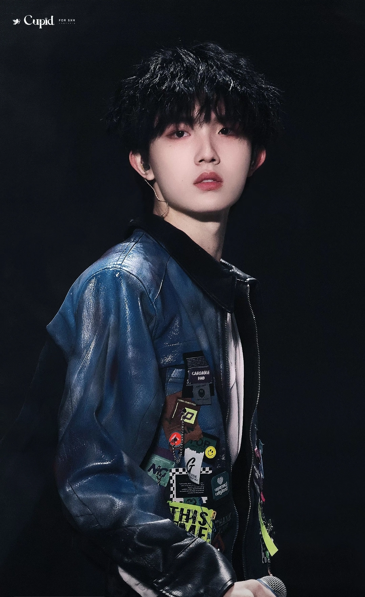

苏新皓(Xinhao Su),2007年1月12日出生于重庆市,中国内地男歌手、T.O.P登陆少年成员。2018年,加入北京时代峰峻文化艺术发展有限公司旗下TF家族成为练习生。2021年12月31日,随TF家族发布歌曲《 长大》。2022年1月30日,随TF家族发布歌曲《 笨小孩的道歉信》[5];3月5日,推出与TF家族同期练习生 左航合作完成的原创音乐单曲《 旅行 (Love in the travel)》;8月14日,随TF家族发表歌曲《 灵魂冲浪(Surfing in a hurricane)》 [16]。2023年1月12日,推出个人首支原创音乐单曲《 一天一天 (Severus)》 [7];1月25日,发布家族成员合作单曲《 日日夜夜 (Day&night)》;12月16日,发布与其他家族成员的合作单曲《 还没想好名字的自由(Miracle)》[12]。2024年8月26日,苏新皓入选TF三代成团“TOP 登陆少年”名单。
2018年,加入北京时代峰峻文化艺术发展有限公司旗下TF家族成为练习生。 此后至2024年八月都是其的练习生生涯。8月25、26日,随TF家族参加TF家族三代“登陆计划”系列演唱会最终站——“登陆时刻”,26日晚,苏新皓入选TF三代成团名单 ;9月6日,TF家族三代男团TOP登陆少年官宣番位,五番苏新皓 。9月22日,参加“湾区升明月”2024大湾区电影音乐晚会,表演节目《Hello 大湾》和《七子之歌》。10月12日,参加节目《2024抖音美好奇妙夜》 ，表演节目《等你的回答》和《娃娃脸》。10月,入选微博视界大会年度推荐·精英赛-剧综人物。
歌曲名称 发行时间 歌曲简介
还没想好名字的自由(Miracle) 2023-12-16 合作单曲
When you come around （当你靠近） 2023-4-14 -
日日夜夜 2023-1-25 合作单曲
一天一天 (Severus) 2023-1-12 个人首支原创单曲
写给他们的歌 2022-9-4 -
旅行 (Love in the travel) 2022-3-5 合作单曲
笨小孩的道歉信 2022-1-30 -
长大 2021-12-31 -
举办时间 演唱会名称 总场次
2024-8-25 至 2024-8-26 TF家族三代“登陆计划”系列演唱会最终站——“登陆时刻” 2 场
2024-2-3 至 2024-2-4 TF家族2024「盛放」新春音乐会 2 场
2023-8-12 至 2023-8-13 TF家族《登陆计划》系列演唱会第三站——让我们不顾一切 2 场
2023-7-22 至 2023-7-23 TF家族《登陆计划》系列演唱会第二站——生于火焰 2 场
2023-4-15 TF家族《登陆计划》系列演唱会第一站——蝴蝶效应 1 场
2023-1-26 TF家族2023新年音乐会《瞬间》 1 场
2022-2-3 TF家族2022新年音乐会《未完成的约定》 1 场
2020-1-11 TF家族2019新年音乐会《重逢》 1 场